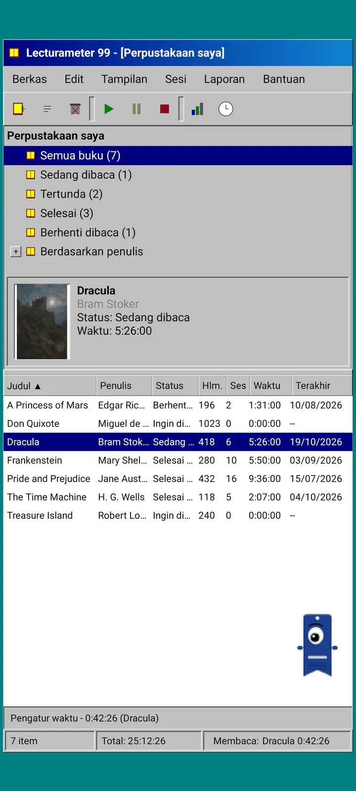
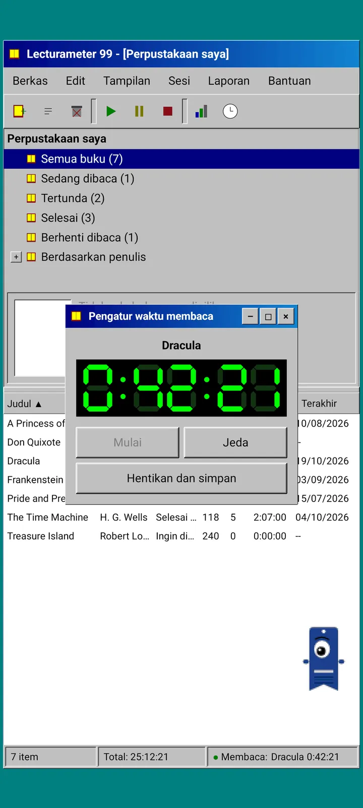
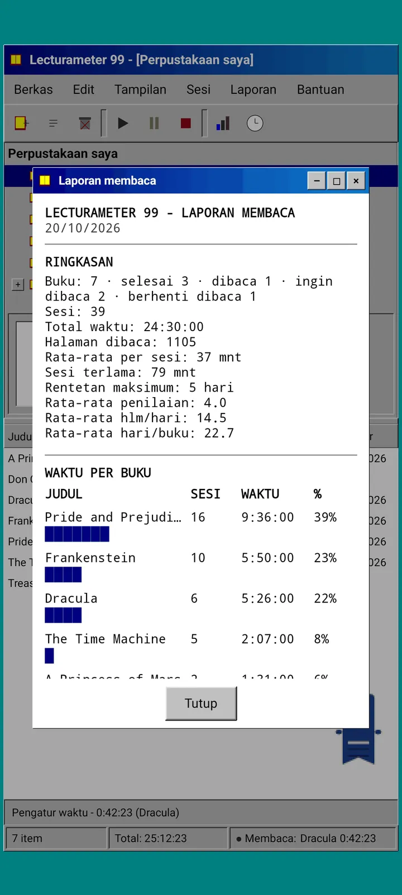
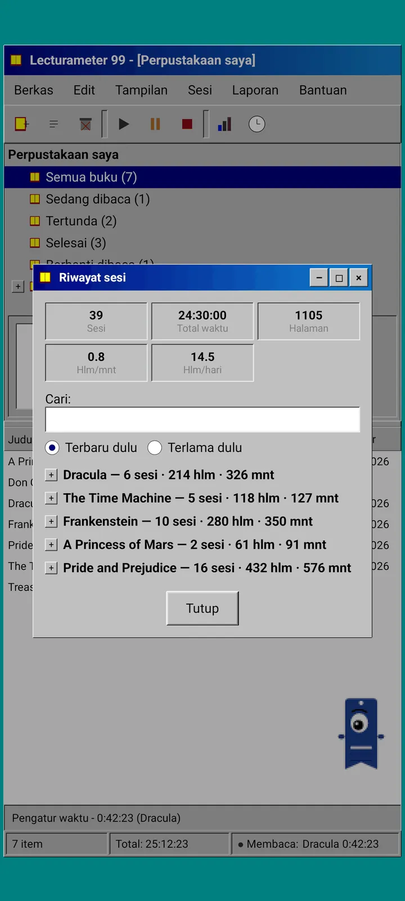
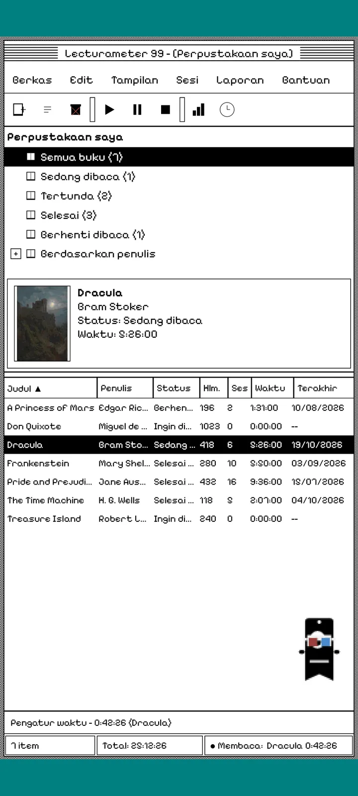
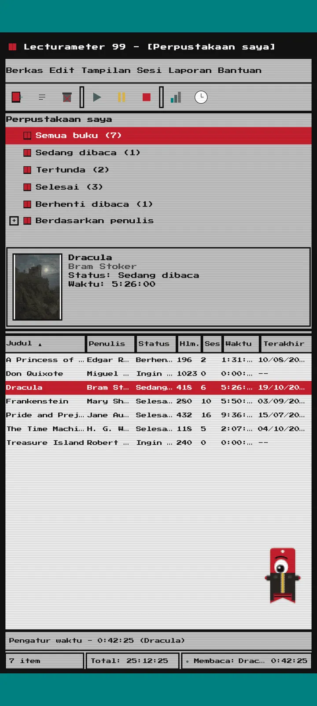
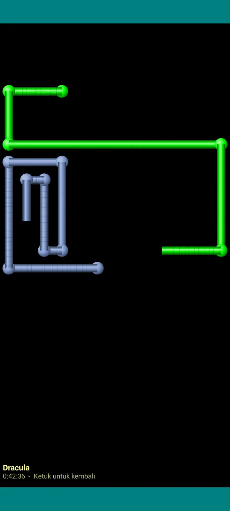

Lecturameter 1999
Lecturameter seolah kamu memasangnya dari CD-ROM di tahun 1999. Klien alternatif untuk aplikasinya, dengan jendela, menu, dan tabel, yang bisa membuka cadanganmu yang asli.

Apa ini
Program desktop akhir tahun sembilan puluhan yang berjalan di ponselmu. Satu jendela di atas desktop hijau toska, bilah menu, bilah alat, pohon folder, tabel padat, dan bilah status.
- Pohon perpustakaan: semua buku, sedang dibaca, tertunda, selesai, ditinggalkan, dan per penulis
- Tabel dengan judul, penulis, status, halaman, sesi, waktu, dan terakhir dibaca. Ketuk judul kolom untuk mengurutkan
- Pencarian buku sungguhan, dengan katalog yang sama dengan Lecturameter
- Mengimpor dan mengekspor cadangan Lecturameter dan CSV Goodreads. Datamu masuk dan keluar tanpa ada yang hilang

Kenapa ini ada
Sebuah eksperimen: membangun ulang ide Lecturameter dari nol dengan prinsip desain yang sangat berbeda, tanpa menyentuh aplikasi aslinya. Dari semua tafsir ulang, versi 1999 yang paling aku suka, jadi aku menyelesaikannya sebagai latihan seru dan menjadikannya klien lengkap. Sengaja dibuat lebih sederhana dari Lecturameter: ini eksperimen dan, pada dasarnya, tidak akan dikembangkan lebih lanjut.
- Pengatur waktu di jendela mengambang dengan layar LCD hijau. Bisa dipindah, diperkecil ke bilah tugas, dan terus menghitung di bilah status
- Saat kamu berhenti, dialog simpan sesi menanyakan halamanmu dan menghitung ritmemu, persis seperti Lecturameter
- Sesi yang disimpan adalah sesi Lecturameter: semuanya kembali ke aplikasi modern kalau kamu mengekspor cadangan Lecturameter 1999 dan mengimpornya di Lecturameter.

Laporan membaca
Statistiknya berupa laporan cetak: ringkasan, waktu per buku dengan batang blok, kecepatan dalam halaman per hari, kalender setahun yang digambar dengan karakter, dan tujuh hari terakhir.

Riwayat sesi
Sesi dikelompokkan per buku dalam pohon dengan tanda plus dan minus, dengan lima angka di atas: sesi, total waktu, halaman, halaman per menit, dan halaman per hari.

Simpan sesi
Tanggal, menit, halaman awal dan akhir, komentar. Ringkasannya menghitung halaman dan ritme sambil kamu mengetik. Kalau kamu sampai di halaman terakhir, aplikasi bertanya apakah kamu sudah menyelesaikan bukunya.

Pagi 99
Pagi juga ikut ke tahun 1999: versi piksel dan bebas berkeliaran di layar seperti asisten kantor zaman itu. Kamu bisa menyeretnya, ia mengucapkan sesuatu saat diketuk, dan menampilkan tip di balon kuning.
Tema
Klasik 98 gratis dan jadi tema bawaan. Paketnya menambah enam lagi, masing-masing dengan latar dan suaranya sendiri.

Pilih dari menu Tampilan
Tampilan, Tema... membuka jendela dengan tujuh tema. Perubahannya langsung berlaku di semua jendela, pengatur waktu, dan Pagi.
- Klasik 98, gratis dan bawaan: jendela abu-abu, bilah judul biru tua, dan desktop hijau toska
- Paket tema: 1984, Permen Jeli, Memori, Menara, Inti, dan 8-bit
- Setiap tema punya latar desktop dan suaranya sendiri untuk ketukan, jendela, dan pengatur waktu
- Tampilan, Suara tema mematikan suaranya kalau kamu membaca dalam sunyi

Klasik 98
Jendela abu-abu, bilah judul biru tua, dan desktop hijau toska. Gratis, dan jadi tema saat aplikasi dibuka.

1984
Desktop hitam-putih satu bit, dengan pola titik dan jendela persegi.

Permen Jeli
Plastik tembus pandang berwarna, tombol membulat, dan garis-garis di latar.

Memori
Menu konsol cakram tahun sembilan puluhan, dalam nuansa biru gelap.

Menara
Konsol cakram tahun sembilan puluhan lainnya, biru malam dengan garis biru muda.

Inti
Konsol hitam dan hijau, seperti layar yang tak pernah mati.

8-bit
Piksel besar, sedikit warna, dan huruf kotak-kotak.

Coba dulu sebelum membayar
Ketuk tema yang terkunci dan seluruh aplikasi langsung berganti ke tema itu. Kalau kamu menutupnya tanpa membeli, tema sebelumnya kembali.
Screensaver
Screensaver hanya muncul saat pengatur waktu berjalan dan ponsel tidak disentuh. Muncul setelah 1, 3, atau 5 menit, atau tidak pernah. Sekali ketuk kamu kembali, dan pengatur waktu tetap menghitung.

Buku terbang
Buku-buku piksel yang mengepakkan sampulnya melintasi layar hitam.

Ladang huruf
Huruf dari berbagai aksara melayang lewat, seperti hamparan bintang.

Pipa halaman
Pipa-pipa dari halaman yang menggambar dirinya sendiri sampai layar penuh.

Pagi memantul
Pagi memantul dari tepi-tepi layar.

Jam membaca
Waktu sesi dalam angka LCD besar.

Kostum untuk Pagi
Delapan kostum untuk Pagi 99. Pilih di Tampilan, Kostum Pagi..., dan kamu bisa mencobanya sebelum membayar.
- Pemutar kaset
- Topi terbalik
- Kacamata 3D
- Kacamata hitam neon
- Disket di tangan
- Jaket kulit
- Hewan peliharaan saku
- Mahkota kardus
Toko
Aplikasinya gratis dan lengkap untuk mencatat bacaanmu. Yang bisa dibeli hanya mengubah tampilannya.
Seluruh aplikasi, tanpa batas waktu.
- Perpustakaan, pencarian, pengatur waktu, dan sesi
- Laporan membaca dan riwayat sesi
- Cadangan Lecturameter dan CSV Goodreads, masuk dan keluar
- Tema Klasik 98 dan Pagi 99
- Tanpa akun dan tanpa iklan
Sekali bayar, tanpa langganan.
- Paket tema, €3.49: 6 tema dengan latar dan suara, plus screensaver
- Screensaver, €1.99: 5 screensaver
- Kostum Pagi, €1.99: 8 kostum
- Semua 1999, €4.49: tema, screensaver, dan kostum
Tip opsional di menu Bantuan, kalau kamu mau mentraktirku kopi.
Tema dan kostum bisa dicoba langsung sebelum membayar. Kalau kamu menutupnya tanpa membeli, yang tadi kembali.
Apa bedanya dengan Lecturameter
Sama seperti Lecturameter
- Data yang sama: buku, sesi, status, skor, dan catatan. File cadangannya sama di kedua aplikasi.
- Pencarian buku berdasarkan judul atau penulis.
- Pengatur waktu sungguhan: tetap menghitung di latar belakang, bahkan kalau aplikasinya kamu tutup.
- Tanpa akun, tanpa iklan, tanpa koneksi kecuali untuk mencari buku.
- Bahasa yang sama dengan Lecturameter.
Hanya di edisi 1999
- Antarmuka desktop tahun 1999. Tanpa Material.
- Jendela sungguhan: bisa diseret, diperkecil, dan ditutup dengan tanda silang.
- Laporan membaca dalam teks, dengan kalender yang digambar dengan karakter.
- Menu konteks dengan tekan lama dan pintasan keyboard kalau kamu menyambungkan keyboard.
- Pagi 99 versi piksel dengan balon tip.
- Tema opsional dengan latar dan suaranya sendiri, screensaver saat pengatur waktu berjalan, dan kostum untuk Pagi.
Yang sengaja tidak ada
- Tanpa Pro dan tanpa langganan. Mencatat bacaan sepenuhnya gratis, tokonya hanya menjual tampilan.
- Tanpa tantangan, bingo, Wrapped tahunan, atau widget.
- Tanpa sesi imersif, suara latar, atau cadangan Google Drive. Cadangannya disimpan sebagai file.
Uji tertutup
Lecturameter 1999 sedang dalam uji tertutup di Google Play. iOS menyusul nanti, belum ada tanggalnya.
- Gabung ke grup groups.google.com/g/lecturameter-1999
- Daftar sebagai penguji di play.google.com/apps/testing/com.lecturameter.r1999
- Pasang dari Google Play
Dalam uji tertutup di Google Play, iOS menyusul. Baca artikel blognya untuk tahu asal-usulnya dan apa yang bisa kamu harapkan.